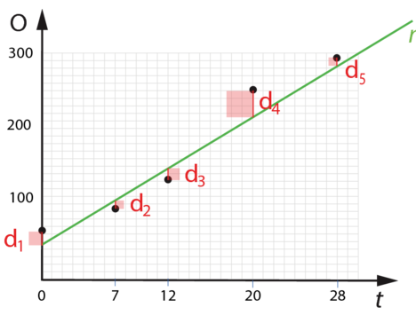

Lineær regression
Matematik grundforløb
Vibenshus Gymnasium
Punkter og rette linjer
Hvad ved i forvejen?
- Hvor mange punkter skal man kende, for at kunne tegne en ret linje?
- 2
Hvad hvis der er flere end to punkter?
Tegn i hånden
Antal oddere i Danmark
| Årstal, x | 1984 (0) | 1991 (7) | 1996 (12) | 2004 (20) | 2012 (28) |
|---|---|---|---|---|---|
| Observationer, y | 67 | 95 | 132 | 251 | 293 |
- Indtegn datasættet på tegnet papir i hånden.
- Indtegn selv den bedst mulige rette linje.
Konklusion
- Grafen går måske ikke igennem nogen af punkterne.
- Grafen skal være så tæt på alle punkterne som muligt.
Interaktiv øvelse
https://matbhtx.systime.dk/?id=c12359
Mindste kvadraters metode
Den bedst mulige rette linje

- Undersøger den lodrette afstand mellem de kendte punkter og en given ret linje.
- Residualer
- Kvadratiske afvigelser
- Summen af alle de kvadratiske afvigelser, skal være så lille som muligt. \[D=d_1^2 + d_2^2 + d_3^2 + d_4^2 + d_5^2\]
Prøv det selv
Mindste_kvadraters_metode.ggb på lectio
- Flyt på \(P_1\) og \(P_2\).
- Få \(DD\) til at blive så lille som muligt.
Få Geogebra til at gøre det
Indtast følgende i input-feltet:
liste1={A,B,C,D,E}(Opret en liste med punkter)FitLinje(liste1)(Finder den bedste rette linje)
Hvor godt passer det så?
Korrelationskoeffiecenten, \(r\)
- Kommando i geogebra:
PMCC(<liste med punkter>)(say what!?)
Forklaringsgraden, \(r^2\)
- \(0 \leq r^2 \leq 1\)
- \(r^2 = 1\) - Perfekt fit.
- \(r^2 = 0\) - Det dårligste fit overhovedet.
- \(r^2 > 0.99\) - Godt lineært fit.
- \(0.95 < r^2< 0.99\) - Rimeligt lineært fit.
Kommando i geogebra:
Rkvadreret(<liste med punkter>, <funktion>)
Opgave

- Indsæt punkter i geogebra (
(2,3.3)i inputfeltet etc) - Opret liste med punkter (
liste1={A,B}og alle de andre punkter også) - Fit en ret linje (
fitlinje(liste1)) - Find forklaringsgraden (
Rkvadreret(liste1,f))
Flere opgaver
https://matbhtx.systime.dk/index.php?id=1295
Backup slides
Hvis man skal regne det hele i hånden